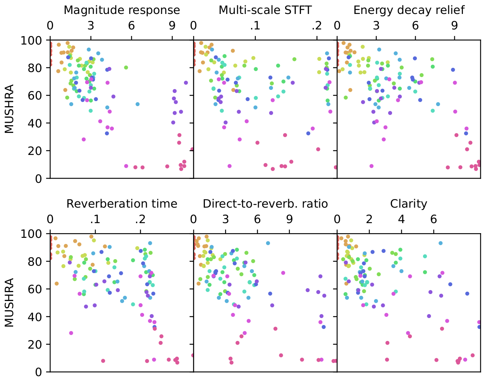

|
Dataset used in this work.
Each point in the scatterplot represents average reverberation parameter (reverberation time T30: x, direct-to-reverberant ratio:y, clarity C50: right plot) of each room's RIRs.
Different colors in the left plot denote different datasets.
|
|
Scatter plot of the reverberation parameters. The y-axis corresponds to the ground-truth RIRs' parameters, while the x-axis corresponds to the predicted RIRs' parameters. The results are on the unseen RIRs from unseen rooms (and utterances from unseen speakers). |
|
Magnitude response of the estimations.
The figure compares the ground-truth's magnitude resposne to the estimations of the proposed models and other baselines. In general, non-autoregressive models tend to struggle to match the low-frequency region.
 Subjective score vs. objective metrics. We compared the subjective scores obtained with the MUSHRA test variant and the objective metrics. |
|
Augmentation Probabilities. Each augmentation, when applicable, is performed with probability of 0.75.
|